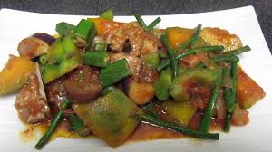

|  | PinakbetNow older, I cook my pinakbet just like hers~ with plenty o succulent pork belly amidst a colorful slew of long beans, bittermelon, eggplant, okra, and kalabasa. Paired with Fried fish and mounds of steamed rice, this vegetable stewmakes one hearty and delicious dinner meal. Enjoy! |
Ingredients2 medium-length eggplants, cubed 1 medium-length bitter melon (ampalaya), sliced 6 tender okra pods 1 garlic clove, minced 1/2 cup of sliced onions 1/2 cup chopped tomatoes 1 cup water from rinsing rice 3 tbsp fermented sauce (less if it is a salty bagoong) 1 tbsp pounder ginger 1 cup boiled sliced pork 2 tbsp cooking oil | |
| <<< Back to Main Dish | |